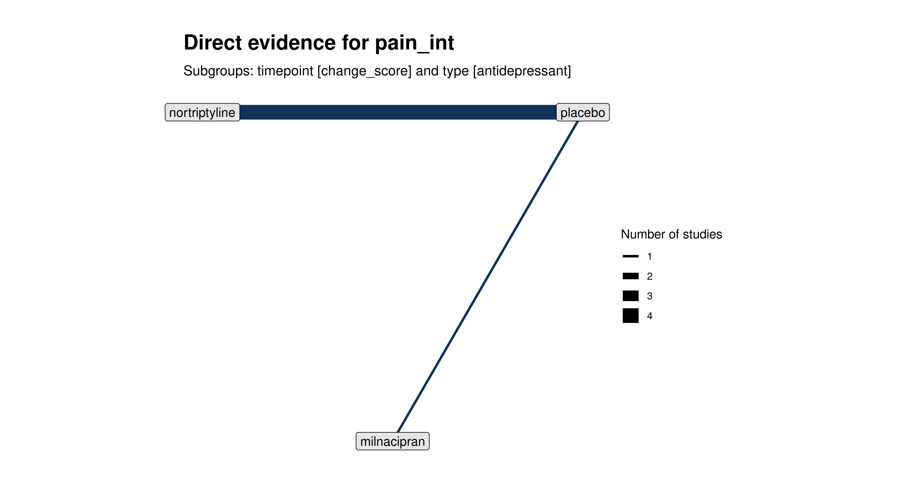
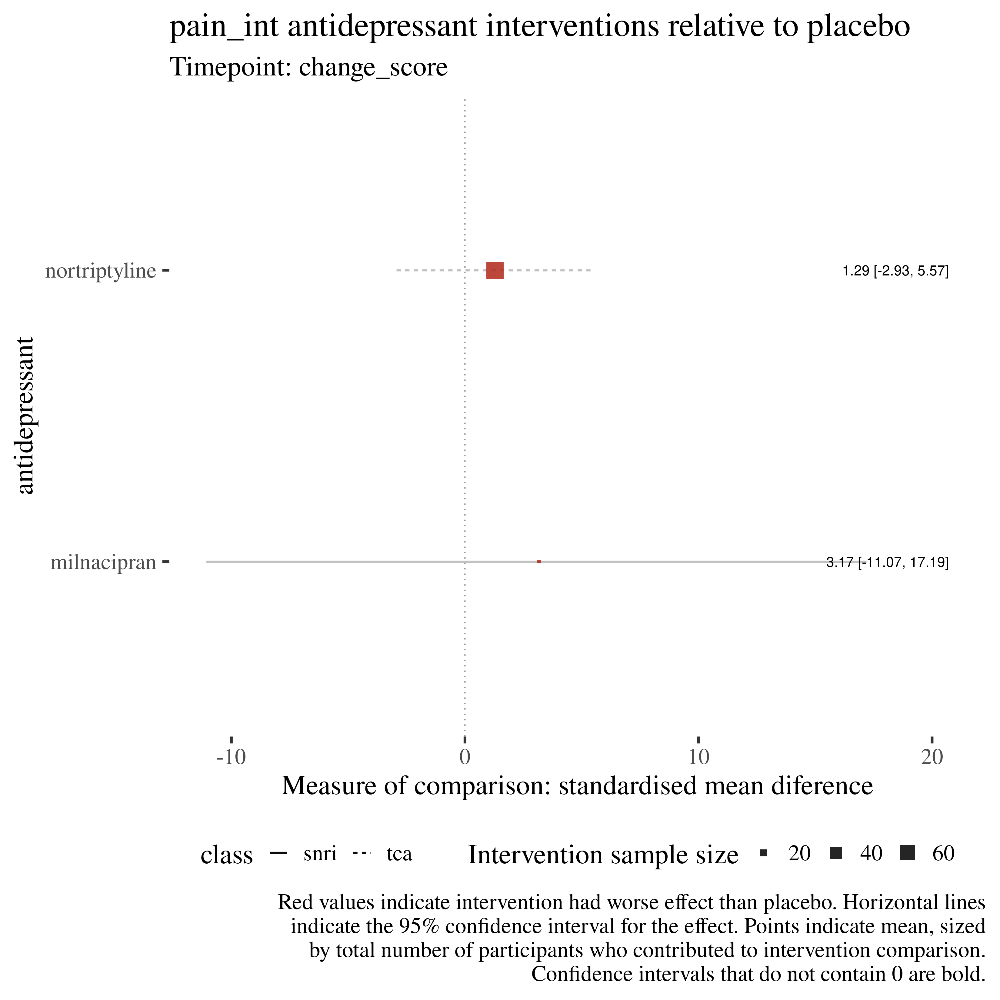
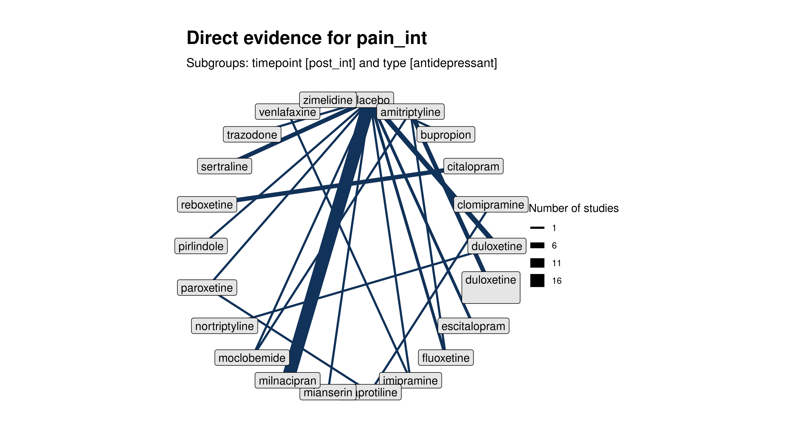
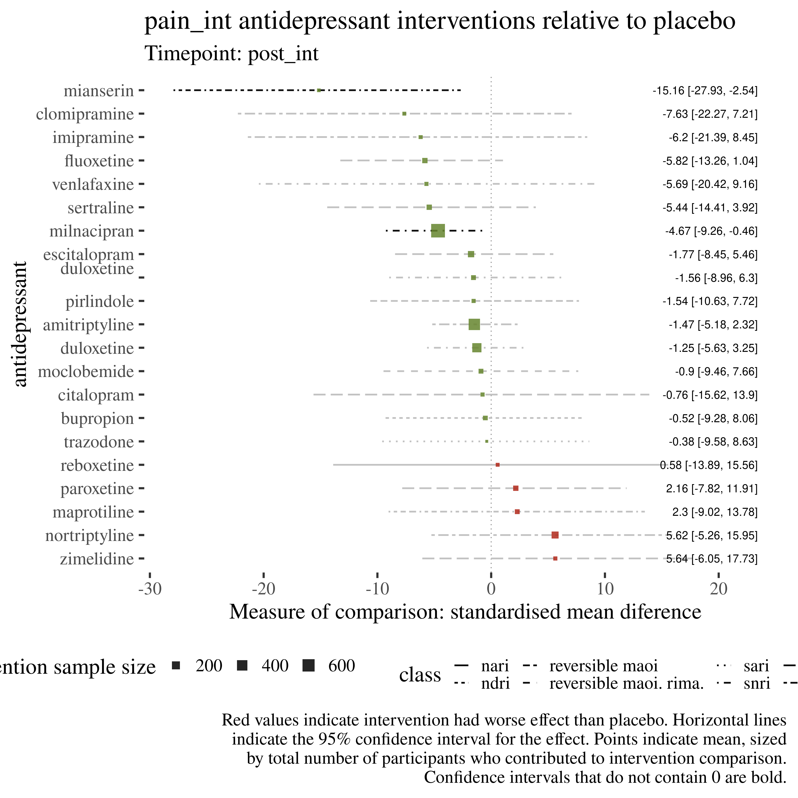

Skip to main content
Antidepressants for pain management in adults with chronic pain
Show table of contents
Table of contents
1
Overview
2
Mood results
3
Substantial pain results
4
Adverse results
5
Pain intensity results
6
Moderate pain results
5
Pain intensity results
5.1
NMA: pain intensity
5.1.1
Type: antidepressant
5.1.1.1
change_score

5.1.1.2
post_int

5.1.2
Type: combined antidepressant intervention
5.1.2.1
post_int
4
Adverse results
6
Moderate pain results
On this page
5
Pain intensity results
5.1
NMA: pain intensity
5.1.1
Type: antidepressant
5.1.2
Type: combined antidepressant intervention